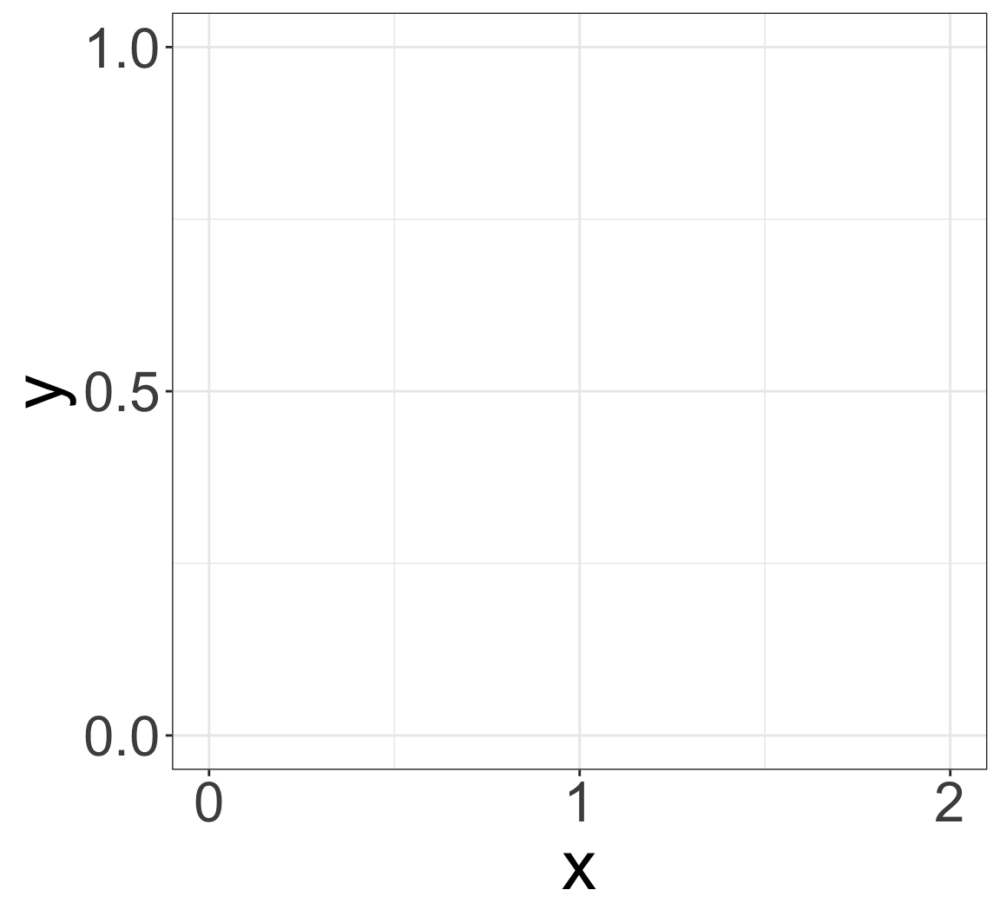

library(tidyverse)
joint1 = tibble(
x = seq(0, 2, 0.01),
y = seq(0, 1, 0.005)
)
x_y_plot1 = ggplot(joint1, aes(x = x, y = y)) +
labs(x = "x", y = "y") +
scale_x_continuous(breaks = c(0, 1, 2)) +
scale_y_continuous(breaks = c(0, 0.5, 1)) +
theme_bw() +
theme(text = element_text(size=30))
x_y_plot1